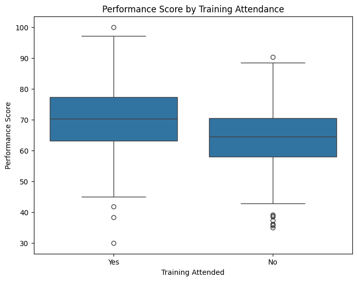

Project Overview
This project investigates a critical business question: Does investing in employee training programs lead to a measurable improvement in performance? Using an independent samples t-test, I analyzed the performance scores of employees who attended training versus those who did not to determine if there was a statistically significant difference.
The dataset used in this project is Employee Training and Performance Dataset
Analysis & Findings
1. Hypothesis Formulation
To structure the analysis, I defined the following hypotheses:
- Null Hypothesis (\(H_0\)): There is no significant difference in the mean performance scores between employees who attended training and those who did not.
- Alternative Hypothesis (\(H_1\)): There is a significant difference in the mean performance scores between the two groups.
2. Assumption Checks
Before performing the t-test, I validated two key assumptions:
- Normality: Using the Shapiro-Wilk test, the performance score for employees who attended training was normally distributed (\(p\)-value = \(0.640\)), while the performance score for employees who did not attend training was not normally distributed (\(p\)-value = \(0.041\)).
- Homogeneity of Variances: Levene's test resulted in a \(p\)-value of approximately \(0.055\), indicating we can assume equal variances.
While this \(p\)-value is just above \(0.05\), it’s borderline. To be cautious, we assume unequal variances and use Welch’s t-test. Welch's t-test is a modified version of the t-test that does not assume equal variances and is also more robust to violations of the normality assumption than the standard independent samples t-test
3. Statistical Test Results
An independent samples t-test yielded the following results:
- T-statistic: \(9.188\)
- P-value: \(2.85 \times 10^{-19}\)
This extremely low \(p\)-value (far below the standard significance level of \(0.05\)) provides strong evidence against the null hypothesis.
Performance Score Distribution by Training Attendance
A box plot would visually confirm that the median performance score is higher for employees who attended training.
Conclusion & Business Impact
The analysis confidently concludes that there is a statistically significant difference in performance scores. The positive t-statistic confirms that employees who attended training have, on average, higher performance scores.
Business Impact: This provides quantitative evidence that the company's training programs are effective and directly contribute to employee performance. It justifies the investment in these programs and supports proposals for future training initiatives.